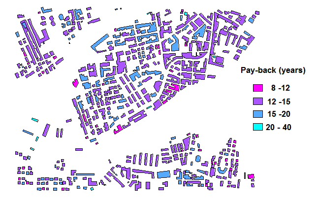
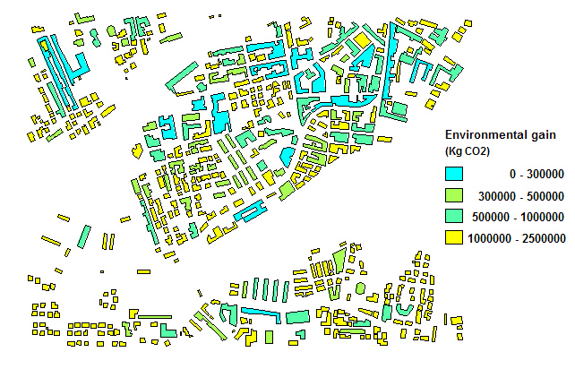

The Lab proposes the computation of solar energy production by using OSGeo (Open Source Geospatial) software,and specifically the GRASS GIS (http://grass.itc.it/).
The Lab is organized in three main steps:
-
Computation of solar irradiation map
The basic GRASS command used is r.sun; as the computed result corresponds to beam (direct), diffuse and ground reflected solar irradiation raster maps for a given day, latitude, surface and atmospheric conditions, we have implemented a script named r.sun.mean that allows the computation of monthly and yearly maps.
In order to make such kind of computation, we need
- the ground albedo map (albedo is the ratio of diffusely reflected to incident electromagnetic radiation)
which is derived from the landuse map
- the Linke turbidity maps (Linke turbidity factor is a measure of atmospheric turbidity)
which are already derived from the landuse map but are specifically computed for each month.
- slope and aspect DSM maps
Therefore firstly we derive the albedo, the Linke maps, the DSM slope and aspect and then we launch the r.sun.mean command.
-
Computation of total energy per year for each building
Before computing the solar energy corresponding to single building, we need to calculate the total irradiation solar map (corresponding to the sum of the three contributes - direct, diffuse and ground reflected). Unfortunately we don't have any direct information about cloudiness, another factor that can strongly influence the global irradiation.
Anyway we have available monthly mean average solar irradiation values for the area of interest obtained by ENEA from remote-sensed data (Meteosat - visible band) (http://clisun.casaccia.enea.it/Pagine/TabelleRadiazione.htm#RadiazioneTabelle).
We consider the mean monthly irradiation values corresponding to period 1994-1999.
For Olbia we have the following daily mean irradiation values for each month:
| Jan | Feb | Mar | Apr | May | Jun | Jul | Aug | Sep | Oct | Nov | Dec |
| 7.1 | 10.0 | 14.8 | 18.2 | 22.0 | 24.0 | 24.0 | 21.0 | 16.2 | 11.9 | 7.9 | 6.3 |
Data are in [MJ m-2 d-1]; the conversion to [kWh m-2 d-1] is given by:
I [kWh m-2 d-1] = (3.6)-1I [MJ m-2 d-1]
Considering the mean of the irradiation obtained by r.sun.mean, we can derive the monthly correction factor we have to consider in order to account for cloudiness.
We recalibrate the monthly maps we obtained at step 1 multiplying each value of the map by a calibration factor, corresponding to the monthly ratio between the ENEA and GRASS monthly mean irradiation values.
(Note that the output of r.sun.mean is given in [Wh m-2 d-1] and therefore a 1000 conversion factor has to be taken into account).
The last aspect we have to be aware of is the dimension of the DSM cells. In the Lab case we have a resolution of 2 m x 2m (the same as the DSM); therefore in order to obtain the mean irradiation for each cell, we have to multiply the solar irradiation per square meter by 4. Now the mean solar irradiation per cell is available.
At this point we compute the total energy per year per building, taking into consideration the area of each building.
-
Computation of solar installation parameters
We can compute the installation parameters, based on the characteristics of the buildings and evaluate costs and efficiency of the installation.
Hereafter please keep in mind that we are mainly interested in a global evaluation, that is in understanding which are the areas of the city or the buidings that are more suitable to be equipped by photovoltaic panels.
For such a kind of analysis, we have decided, for each buiding, to consider:
- the energy provided by the solar installation
- the installation dimensioning
- the economic evaluation of the installation
1. Computation of solar irradiation map
g.region n=4530358 s=4529364 e=542604 w=541054 res=2
g.copy rast=corine@PERMANENT,corine g.copy rast=dsm@PERMANENT,dsm g.copy vect=buildings@PERMANENT,buildings
This map can be derived from the landuse map by means of reclassification.
| Corine values |
Albedo value |
| 521 |
0.05 |
|
111, 112, 121, 122, 123,133
|
0.1 |
| 322, 323 | 0.2 |
| 141, 142, 243 |
0.25 |
r.mapcalc 'albedo = \ if(corine==521,0.05, \ if(corine==111||corine==112||corine==121||corine==122|| \ corine==123||corine==133,0.1, \ if( corine==322||corine==323,0.2, \ if( corine==141 || corine==142 ||corine==243, \ 0.25, null() ))))'
These maps can be derived from the landuse map by means of reclassification. First the landuse is classified into three categories following the rule:
| Corine values |
Typology |
|
121, 123, 133
|
Industrial |
| 111, 112, 122, 141, 142, 521 |
Urban |
| 243, 322, 323 |
Rural |
| Typology |
Jan | Feb | Mar | Apr | May | Jun | Jul | Aug | Sep | Oct | Nov | Dec |
|
Industrial
|
4.1 | 4.3 | 4.7 | 5.3 | 5.5 | 5.7 | 5.8 | 5.7 | 5.3 | 4.9 | 4.5 | 4.2 |
| Urban |
3.1 | 3.2 | 3.5 | 4.0 | 4.2 | 4.3 | 4.4 | 4.3 | 4.0 | 3.6 | 3.3 | 3.1 |
| Rural | 2.1 | 2.2 | 2.5 | 2.9 | 3.2 | 3.4 | 3.5 | 3.3 | 2.9 | 2.6 | 2.3 | 2.2 |
January
r.mapcalc 'Linke.Jan = \ if(corine==123||corine==133||corine==121,4.1,\ if(corine==111||corine==112||corine==122||corine==141|| \ corine==142||corine==521,3.1, \ if(corine==243||corine==322||corine==323,2.1, null())))'
February
r.mapcalc 'Linke.Feb = \ if(corine==123||corine==133||corine==121,4.3,\ if(corine==111||corine==112||corine==122||corine==141|| \ corine==142||corine==521,3.2, \ if(corine==243||corine==322||corine==323,2.2, null())))'
March
r.mapcalc 'Linke.Mar = \ if(corine==123||corine==133||corine==121,4.7,\ if(corine==111||corine==112||corine==122||corine==141|| \ corine==142||corine==521,3.5, \ if(corine==243||corine==322||corine==323,2.5, null())))'
April
r.mapcalc 'Linke.Apr = \ if(corine==123||corine==133||corine==121,5.3,\ if(corine==111||corine==112||corine==122||corine==141|| \ corine==142||corine==521,4.0, \ if(corine==243||corine==322||corine==323,2.9, null())))'
May
r.mapcalc 'Linke.May = \ if(corine==123||corine==133||corine==121,5.5,\ if(corine==111||corine==112||corine==122||corine==141|| \ corine==142||corine==521,4.2, \ if(corine==243||corine==322||corine==323,3.2, null())))'
June
r.mapcalc 'Linke.Jun = \ if(corine==123||corine==133||corine==121,5.7,\ if(corine==111||corine==112||corine==122||corine==141|| \ corine==142||corine==521,4.3, \ if(corine==243||corine==322||corine==323,3.4, null())))'
July
r.mapcalc 'Linke.Jul = \ if(corine==123||corine==133||corine==121,5.8,\ if(corine==111||corine==112||corine==122||corine==141|| \ corine==142||corine==521,4.4, \ if(corine==243||corine==322||corine==323,3.5, null())))'
August
r.mapcalc 'Linke.Aug = \ if(corine==123||corine==133||corine==121,5.7,\ if(corine==111||corine==112||corine==122||corine==141|| \ corine==142||corine==521,4.3, \ if(corine==243||corine==322||corine==323,3.3, null())))'
September
r.mapcalc 'Linke.Sep = \ if(corine==123||corine==133||corine==121,5.3,\ if(corine==111||corine==112||corine==122||corine==141|| \ corine==142||corine==521,4.0, \ if(corine==243||corine==322||corine==323,2.9, null())))'
October
r.mapcalc 'Linke.Oct = \ if(corine==123||corine==133||corine==121,4.9,\ if(corine==111||corine==112||corine==122||corine==141|| \ corine==142||corine==521,3.6, \ if(corine==243||corine==322||corine==323,2.6, null())))'
November
r.mapcalc 'Linke.Nov = \ if(corine==123||corine==133||corine==121,4.5,\ if(corine==111||corine==112||corine==122||corine==141|| \ corine==142||corine==521,3.3, \ if(corine==243||corine==322||corine==323,2.3, null())))'
December
r.mapcalc 'Linke.Dec = \ if(corine==123||corine==133||corine==121,4.2,\ if(corine==111||corine==112||corine==122||corine==141|| \ corine==142||corine==521,3.1, \ if(corine==243||corine==322||corine==323,2.2, null())))'
Instead of running twelwe times the command, we can use the simple script /root/Linke.script
As last step we need to compute DSM slope and aspect.
To perform this task it is enough to use the r.slope.aspect command:
r.slope.aspect elevation=dsm slope=slope_dsm aspect=aspect_dsm
Now we are "theoretically" ready to launch the command r.sun.mean. We say "theoretically" because that computation requires a lot of time (many hours) and therefore we provide you directly the results of the computation. From those results we consider:
- the twelwe mean_Jan,..., mean_Dec maps, giving the mean monthly value for each square meter
- the sum_year map, containing the total solar energy for square meter corresponding to one year.
Anyway if you want to repeat by yourself all the computations, the command to be used is the following:
r.sun.mean elevin=dsm aspin=aspect_dsm slopein=slope_dsm albedo=albedo linkein=Linke -m -y
g.copy rast=sum_year@solar_res,sum_year
2. Computation of total energy per year for each building
r.univar mean_Jan
The results that we obtain are:
total null and non-null cells: 385175
total null cells: 79266
Of the non-null cells:
----------------------
n: 305909
minimum: 238.438
maximum: 7284
range: 7045.56
mean: 2148.87
mean of absolute values: 2148.87
standard deviation: 1306.5
variance: 1.70694e+06
variation coefficient: 60.7994 %
sum: 657357632.4974517822
Therefore we can build up a table of comparisons between our statistics and those obtained by ENEA:
| Month |
computed (Wh/m2) | ENEA (kWh/m2) | conversion factor |
| Jan | 2149 | 1,972 | 0,0009 |
| Feb | 3055 | 2,778 | 0,0009 |
| Mar | 4339 | 4,111 | 0,0009 |
| Apr | 5587 | 5,056 | 0,0009 |
| May | 6487 | 6,111 | 0,0009 |
| Jun | 6842 | 6,667 | 0,0009 |
| Jul | 6603 | 6,667 | 0,0010 |
| Aug | 5849 | 5,833 | 0,0009 |
| Sep | 4720 | 4,500 | 0,0009 |
| Oct | 3425 | 3,306 | 0,0009 |
| Nov | 2360 | 2,194 | 0,0009 |
| Dec | 1886 | 1,750 | 0,0009 |
As we can see, the conversion factor is almost the same for all months (exception only represented by the month of July). The conclusion is that we can use for each month as conversion factor the value 0.0009 and it can also be applied to the yearly energy.
Moreover we want to obtain the total solar energy for each cell (and not for square meter) and each cell, in our case, has dimension of 2 m x 2m = 4 m2.
By using the command
r.mapcalc 'sum_year_cell=sum_year*0.0009*4'
we obtain the total energy, recalibrated for cloudiness, corresponding to each individual cell.
The computation of the total energy per year for each building is given by:
v.sample.class input=buildings raster=sum_year_cell pre=solar mode=sum
A new column (attribute) of the building vector map is created containing for each cell the sum of total energy in a year (Ebuild in kWh, corresponding to solar_sum new column).
3. Computation of solar installation parameters
3.1 Energy provided by the solar installation
We want to add each building with an attribute (column) containing the energy consumption corresponding to one year.
Unfortunately we don't have available such an information. We try to infer that value considering an average situation (data refers to Italy). The only information we have till now is the total area of each building.
The annual consumption of electric energy for a residential dwelling is estimated around 2500 kWh and a mean residential dwelling has dimension of about 90-100 m2. Therefore the consumption for square meter is 25-28 kWh. We have decided to round the value, taking as acceptable 30 kWh/m2.
Another approximation is due to the fact that the buildings we have are only in part residential. It means that such a kind of estimate is not true for industrial and rural buildings, which anyway are the minority of our dataset and can be counted out at the end of the process.
To compute building consumptions (cons), as usual, we add before a new column, named 'cons' in kWh
v.db.addcol map=buildings layer=1 'columns=cons DOUBLE'
and then we fill the new column:
v.db.update map=buildings layer=1 column=cons value=AREA*FL_NUMBER*30
Moreover solar power is not available at night and less available in cloudy weather conditions: a percentage complementary power system (integration in percentage) is usually adopted.
We decided to use 70 %. In the script we will put: integration= 70.
The annual electric energy we need is:
Econs= cons * integration (given in kWh)
At the same time the unitary energy Edel (in kWh/m2) that we can produce depends on the efficiency of the photovoltaic module (eff1 in percentage) and on the efficiency of the installation (eff2 in percentage). The former relies on the specific materials the cells are made: amorphous silicon (4-7 %), multicrystalline silicon (10-15 %),... The second is due to the loss of energy in converting direct current produced by solar cells to alternating current in the distribution grids.
We propose to use as values those provided by Regione Lombardia
(http://www.ambiente.regione.lombardia.it/webqa/dgri/bandofotovoltaico/guida_che.htm)
eff1 = 12
eff2 = 80
We have already computed the incident energy Ebuild; to obtain the mean annual energy per square meter for each building it is enough to compute:
Emean = Ebuild/ area (in kWh/m2)
Now we have:
Edel = Emean * eff1 * eff2
3.2 The installation dimensioning
Now we can calculate the installation required surface:
surfaceinstal = Econs / Edel (in m2)
To compute the other installation parameters, we need dimension (dim in m2) and peak power (P in Wp) of a photovoltaic panel.
At the website of Regione Lombardia we find:
dim = 0.9 (rounding the found value 0.87)
P = 110
The number of panels we need and the installation peak power are given by:
number = surfaceinst / dim
Peak = P * number (in kWp).
At this point we can also compute the annual energy delivered by the installation (Einst in kWh/year).
Remark: Since solar cell output power depends on multiple factors, for comparison purposes between different cells,panels and installations the measure of watts peak (Wp) is used. It corresponds to: solar irradiance = 1000 W/m²,
3.3 The economic evaluation of the installation
We want to compute the economic profit, which happens when revenue exceeds the total cost.
It is interesting to estimate for which buildings there is an economic profit, what is the time of economic profit (given in year) and, in case,
Hereafter we refer to the italian case.
In the economic evaluation we consider
outflow: capital cost, VAT, operating costs, handling costs and insurance.
inflow: discounts on the bill, incentives, sale of electricity.
Outflow:
The capital cost (inst_cost in €/kWp) can be obtained from the Regione Lombardia website:
inst_cost = 7250.
The VAT is a percentage of the capital cost:
VAT = 10.
The operating cost (maint_cost) is usually considered as a percentage of the capital cost and; consulting photovoltaic installers we got the value:
maint_cost=1
The handling cost (run_expenses in €) corresponds to administratives expenses (payed to the electricity utilities). In case of "net metering" (http://en.wikipedia.org/wiki/Net_meteringhttp://en.wikipedia.org/wiki/Net_metering)
run_expenses = 60
The insurance (insur_cost in €/kWp), especially against hail, corresponds to
insur_cost = 35.
Inflow:
In Italy electricity rates strictly depend on the annual consumption. We have the following classes, based on min and max consumption:
| min consuption (kW) |
max consumption(kW) |
rate (€/kWh) |
| 0 | 900 | 0.11127 |
| 901 | 1800 | 0.1244 |
| 1801 | 2640 | 0.18169 |
| 2641 | 3540 | 0.26512 |
| 3541 | 4440 | 0.26061 |
| 4441 | 1000000 | 0.17656 |
(source the largest italian electric utility http://www.enel.it/sportello_online/elettricita/tariffeelettriche/domest...)
In order to run the command to perform the computation we need to prepare a text file containing those values. But in case you use the USB key, the file is already available in the folder /root/parameter_tables/ and the name is consumption_rate.txt.
0:900 0.11127 901:1800 0.1244 1801:2640 0.18169 2641:3540 0.26512 3541:4440 0.26061 4441:1000000 0.17656
Moreover we have for some years (incent_length in years) also incentives based on the power installed, that we can summarize in the following table
| min power (kW) |
max power (kW) |
rate (€/kWh) |
| 0 | 3 | 0.44 |
| 3 | 20 | 0.42 |
| 20 | 1000000 | 0.40 |
We prepare a text file (that in your case is already available: incentive_rate.txt in the folder /root/parameter_tables/) containing the previous data:
0:3 0.44 3:20 0.42 20:1000000 0.40
The incentive period is
incent_length = 20.
Finally the sale of electricity is not considered in this case because we suppose that a net metering policy is applied.
The last factor we can compute with the v.pv command is the total amount of CO2 that is unemitted by using photovoltaic technology, value that nowadays is not a direct gain for the owner but a global gain for the community.
The emission of CO2 depends on the electric mix. As an example, if the electric energy is obtained from
Coal (50 %)
Nuclear (47 %)
Natural gas (2 %)
Hydro and renewable energy (1 %)
the emission corresponds to 0.50 kg CO2 / kWh.
If heavy coal is used the emission corresponds to 0.90 kg CO2 / kWh.
From the website of the Italian Minister for the Environment and the Protection of Land and Sea (http://www.minambiente.it/index.php?id_sezione=1186) we obtain for the electric mix (electric _mix in kg CO2/kWh)
electric_mix = 0.531
The environmental gain (G) ,due to unemitted CO2, is given by:
G = Einst * electric mix * lifespan
where lifespan (in years) is the installation lifespan, which approximately is
lifespan = 25.
Now we are ready to run the command v.pv:
v.pv building=buildings total_energy=solar_sum eff1=12 eff2=80 area=AREA \ output=buildings_pv consumption=cons integration=70 dim=0.9 P=110 \ rate_cons=/root/parameter_tables/consumption_rate.txt \ rate_incentive=/root/parameter_tables/incentive_rate.txt inst_cost=7250 VAT=10 \ run_expenses=60 maint_cost=1 insur_cost=35 inst_lifespan=25 incent_length=20 \ electric_mix=0.531

pay_back (years): min = 8.15, max = 31.12

environmental gain (kgCO2): min = 5361.4 max = 2.3 x 106